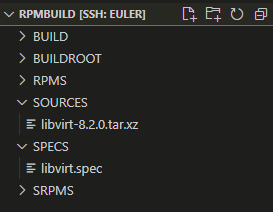
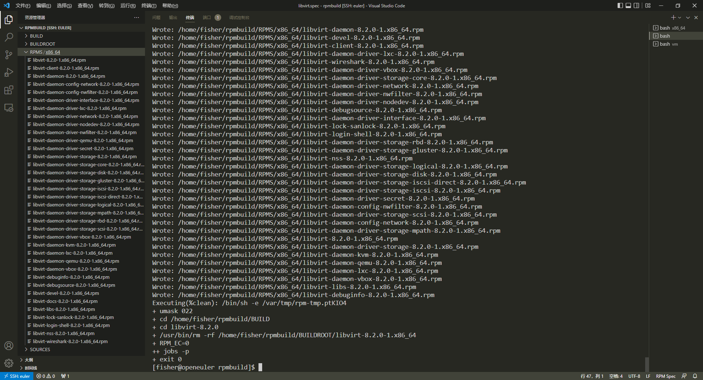
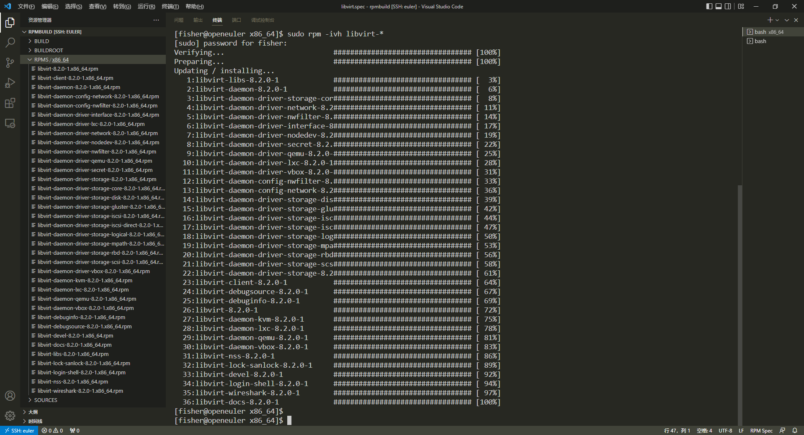
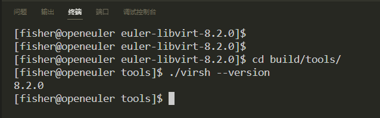
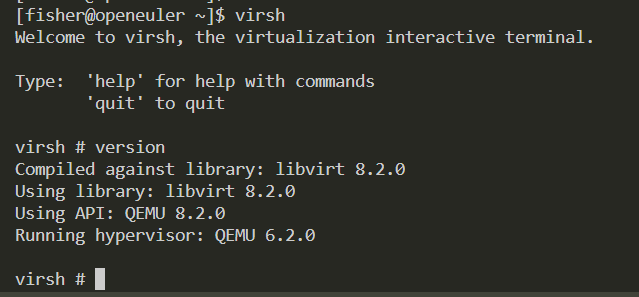
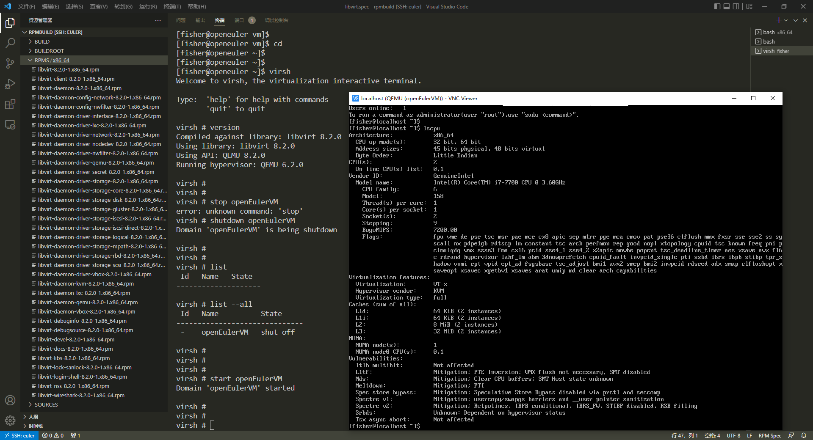

前言
本机源码编译没问题之后，下一步就是构建RPM包了。由于libvirt 8.2.0版本将构建系统从make换成了meson，因此旧版的SPEC文件参考的价值不高，好在Fedora系统的libvirt是最新版的，我们可以参考Fedora RPM仓库中的SPEC文件。编写完SPEC文件后使用RPM构建工具打包，生成RPM包后再安装到本机上并进行测试。
环境准备
安装RPM打包工具包：1
sudo yum install rpmdevtools
初始化RPM打包工作区，命令会在用户根目录下创建一个rpmbuild目录，作为打包的根目录：1
rpmdev-setuptree
其他依赖：推荐是先安装libvirt 6.2.0版本，能自动解决绝大多数依赖问题，构建完之后再卸载掉即可
参考链接：
编写SPEC文件
宏定义
SPEC文件的头部一般都是一些关于系统架构和依赖的宏定义，用于定义是否在某些系统架构上启用某个组件，将欧拉的SPEC文件与Fedora的SPEC文件对比可以发现有许多不同的地方：
- Fedora的SPEC文件首先定义了关键组件所支持的架构，方便在以后某些架构支持某个组件后，直接修改这里就能启用对应架构的组件支持，这种写法结构很清晰，我也打算使用这种写法
- Fedora的SPEC文件中定义了Fedora和RHEL两种系统版本宏，在欧拉中不需要定义，因此将这些宏去掉
- 由于部分组件在欧拉系统中尚未支持，如：
zfs。因此在宏中直接定义为禁用 bash_completion包在新版中去掉了，变成了一个编译参数，因此需要修改对应宏定义，同时增加对应编译参数
包定义
宏定义后紧跟的是软件包的定义，包括软件包名称、版本、描述、补丁列表、依赖等，这里大部分都可以参考Fedora的SPEC文件，需要注意的地方有以下几点：
- 欧拉官方源中尚未支持
mdevctl，因此在daemon-driver-nodedev包中需要把对应的依赖注释掉 - 欧拉系统中的
qemu-kvm组件集成到了qemu中，因此在daemon-kvm包中把对应依赖包名称修改一下
构建脚本
随后是RPM包的构建脚本，脚本中定义了软件包的编译选项，同时定义了整个安装过程，这里基本都是从Fedora的SPEC文件中复制过来的
更改日志
SPEC文件的修改日志，每次软件包有补丁更新都需要在这里描述补丁信息
构建、安装、测试
构建
将libvirt.spec文件放到~/rpmbuild/SPECS/中，将libvirt-8.2.0.tar.xz文件放到~/rpmbuild/SOURCES/中，rpmbuild文件夹下的目录结构应该如下图所示

使用以下命令构建RPM包：1
2cd ~/rpmbuild/
rpmbuild -ba SPECS/libvirt.spec
构建和过程和源码编译的过程差不多，不同的地方是RPM会进行安装测试，确保没有错误后再打包为RPM包，以下是构建完成后的输出

安装
从上图右侧目录可以看到RPMS/x86_64文件夹中会有很多生成rpm包文件，将这些RPM包都安装到本机上：1
rpm -ivh RPMS/x86_64/libvirt-*.rpm
这时候可能会出现非常多的依赖报错问题，没关系问题不大，打开这个网站按照依赖的名字一个一个搜，就能找到包名然后安装了，网址点击这里
一顿猛排查下来，发现欧拉官方源少了三个包：mdevctl，zfs-utils，qemu-kvm。再看看旧版的SPEC文件，解决方法是把ZFS屏蔽掉，其他两个依赖在旧版中不存在，应该是后续版本中新加上去的依赖。
跟导师简单地讨论下当前的情况之后，导师给出的解决方法有两个：
- 从源码编译安装缺少的依赖包，然后再尝试安装
- 在SPEC文件中屏蔽掉对应的依赖，就当什么事都没发生
于是我便尝试先解决mdevctl包依赖的问题，源码编译过程如下。首先是mdevctl，安装cargo构建工具，随后从GitHub上clone源码下来，最后编译并安装1
2
3
4
5sudo yum install -y cargo
git clone --depth=1 https://github.com/mdevctl/mdevctl.git
cd mdevctl
cargo build
sudo make install
安装完成后再次尝试运行RPM包安装命令，发现仍然提示缺少mdevctl这个包，但我在命令行中是能够正常使用mdevctl相关命令的，我严重怀疑这个RPM包依赖分析是只从YUM、RPM等包管理命令中获取软件包是否安装的信息，而不是从系统的环境变量中获取，因此只能先放弃解决mdevctl包的依赖问题，在SPEC文件中屏蔽掉对应依赖。关于zfs-utils包，这个包在欧拉官方源中没有，因此也只能暂时屏蔽掉了。关于qemu-kvm包，在欧拉官方源中，这个包集成到qemu包中了，在SPEC文件中将依赖修改为qemu即可。
SPEC文件修改完成后，再次重新构建RPM包，构建完成后安装，此时应该就没有依赖问题了

RPM安装完成后，记得启动libvirtd服务，命令如下：1
sudo service libvirtd start
测试
运行virsh，随便敲点命令，尝试创建一个虚拟机，观察虚拟机是否运行正常
命令行验证版本

virsh测试

虚拟机测试
